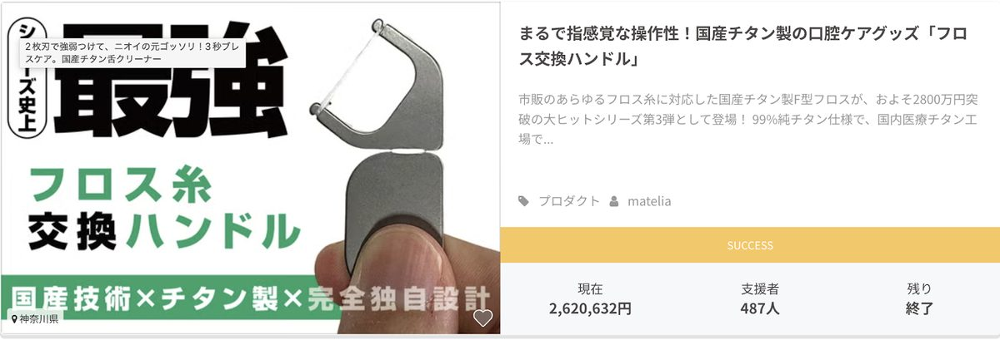

せどり・転売？今日から辞めていい。
無在庫&予約で完売する
「自分ブランド物販アカデミー」
（通称：Crowd Edge）
深夜2時。
スマホが、また光った。
Amazonからの、あの通知音。
鳴るたびに、胸の奥が小さく縮む。
今度は、何の規約変更だろう？
散らかったリビングで、ひとり、バーコードを読む。
1個、300円の利益。
35歳にもなって、こんな夜中に、これをしている自分。
この前、子どもに「お仕事、なにしてるの？」と聞かれて、うまく答えられなかった。
家族にも、ただ「ネットショップの運営」とだけ言ってある。
本当は、店の隅で隠れてスキャンしてたり、仕入れと称してネットでの価格のミスを刈り取ったり、必要な人が買えないのはお構いなしに棚の商品をゴッソリ買い占めたり。
誇れない転売をしているだけなのに。
「自分の金」のために、子どものオモチャを買い占めるママがSNSで炎上してたっけ。
「炎上してないだけで、自分も一緒だわ」
「これ、別に俺じゃなくてもいいよな」
そんなふうに思った夜、一度でもありますか？
もし、こんな夜が、あなたの昨日と少しでも重なるなら。
ここから先の話は、あなたひとりのために書きました。
これからお伝えするのは「在庫をひとつも持たず」「お金を先払いもせず」「自分だけの商品」を何度もくりかえし、「ファンだけ」に、「予約の段階で完売状態」で売っていく物販の方法です。
もう、誰かに叩かれる転売でもない。
家族に、うしろめたさを感じる仕事でもない。
胸を張って「これが俺の仕事だ」と言える、社会性のある働き方。
そして、ネットを探してもなかなか出てこない、明るい方法です。
先に、正直に言っておきます。
これは、ラクをして一発当てる話ではありません。
毎日コツコツ、泥臭い手も動かします。
それでも、店の隅でこっそりスキャンし続ける毎日とは、根っこから、違う。
自分の名前で、自分の商品を。
誰かの規約に、二度とおびえなくていい働き方へ。
こうした働き方へ向かう、ひとつの道。
それが、
せどり・転売？今日から辞めていい。
無在庫&予約で完売する
「自分ブランド物販アカデミー」
（通称：Crowd Edge）
です。
この先を読み進めると、こんな景色が見えてきます。
規約変更やアカウント停止の通知に、もう心臓を跳ねさせなくていい。
ルールに従うだけの側から、自分の商品でルールを持つ側へ
子どもや家族に、胸を張れる。
「安く買って高く売る人」ではなく、メーカーと組んで世に商品を届ける作り手として表に立てる
売って、終わりにしない。ひとつの商品を5回も売り、あとから静かに積み上がっていく資産に変えていく。
あの深夜のバーコードから、抜け出す道は、たしかにあります。
その具体的な道のりを、ここから一緒にたどっていきませんか？
先に、ひとつだけ見てほしいものがあります。
これは、ある1つの商品が歩んだ記録です。
歯の間を掃除する、フロス糸の交換ハンドル。
国産の技術で、チタンから削り出した、たった1つの製品。
その最初の販売で、生まれた売上が、これです。
売上の総額、9,692,475円。
買ってくれた人は、1,841人。
在庫を抱えることも、値下げ合戦をすることも、なくです。

ここで、多くの人はこう思います。
「たまたま、当たっただけでしょう？」と。
では、これはどう見えますか？
同じ商品で、5回目の販売。
それでも、2,620,632円。
487人が、また財布を開いてくれました。

売って、終わりではありません。
一度きりの花火でも、ありません。
たった1つの商品を、1回、2回、そして5回。
くりかえし、お金を生み続ける。
深夜にバーコードを読んでも、翌朝には消えていくあの労働とは、まるで逆の世界です。
なぜ、こんなことが起きるのか？
なぜ、同じ商品が、5回も売れ続けるのか？
これは、才能でも、まぐれでもありません。
きちんとした理由と、たどるべき順番があります。
いま見てもらったのは、ほんの入り口にすぎません。
この続きで、その理由を、ひとつずつ解き明かしていきます。
終わらない怯えと、誰にも言えない夜
もう一度だけ、あの夜を思い出してみてください。
スマホが光る。Amazonからの通知。
その瞬間、指先が止まって、胸の奥がすっと冷たくなる。
今度は何だ？
アカウント停止か。
規約変更か。
考えてみれば、おかしな話です。
自分で働いて、自分で稼いでいるはずなのに、その生殺与奪をまったく別の誰かが握っている。
彼らが気まぐれにルールを一行変えれば、昨日まで積み上げてきたものが、一夜でゼロになる。
その恐怖に、あなたはもう、何年おびえてきましたか？
これが、1つ目の痛みです。
自分の足で立っているつもりで、その足場は、他人の手のひらの上にある。
そして、もっと深いところに、2つ目の痛みがあります。
子どもに「パパ、何のお仕事してるの？」と聞かれて、言葉に詰まりませんでしたか？
家族には「ネットショップの運営」とだけ言ってある。
嘘は、ついていない。
でも、本当のことも言っていない。
本当は、店の棚の陰で、店員の視線を気にしながら、こっそりスマホをかざしているだけ。
ネットで価格の付け間違いを見つけては、それを刈り取っているだけ。
ネットを開けば「転売ヤー」と叩かれる。
反論はできない。
心のどこかで、自分でもそう思っているから。
胸を張れない。
子どもに、堂々と背中を見せられない。
このうしろめたさは、口座にいくら入っても、消えてくれません。
3つ目の痛みは、いちばん静かに、あなたをむしばみます。
必死でリサーチして、安く仕入れて、梱包して、発送して。
たしかに、いくらかは残る。
でも、また明日、ゼロからやり直しです。
売上を伸ばそうとすればするほど、リサーチも、梱包も、発送も増えていく。
体は一つしかないのに、作業だけが積み上がる。
そして手元に残るのは、売れ残った在庫と、終わりの見えない徒労だけ。
深夜2時。
誰もいないリビングで、バーコードを読みながら、ふと思う。
これ、別に俺じゃなくてもいいよな、と。
35歳。
いい大人が、こんな夜中に、これを。
一生、これを続けるのか？
もし、ここまで読んで、胸のどこかがざわついたなら。
それは、あなたが悪いからではありません。
ただ、乗っている船が、間違っているだけです。
欲しいのは楽園ではなく、胸を張れる自分
ここで、正直にお伝えしておきたいことがあります。
これからお話しするのは、「働かずに寝ているだけで大金が入る」といった類の話ではありません。
そういう甘い言葉に、あなたはもう、うんざりしているはずですから。
入口では、泥臭いこともします。
頭も使うし、手も動かす。
正しい順番で、たった一つ、本物を仕込む。
ただ、その先に待っている景色が、今とはまるで違う。
想像してみてください。
まず、あの通知音に、二度とおびえなくてよくなります。
なぜなら、売っているのは他人の商品ではなく、あなた自身の商品だから。
ルールに従わされる側から、自分でルールを持つ側へ、静かに立場が変わる。
子どもに「何のお仕事してるの？」と聞かれたら、こう答えられます。
「メーカーさんといっしょに、世の中にまだない物を作って、届ける仕事だよ」と。
店の陰で隠れる仕事ではない。
名前を出して、表に立てる仕事です。

うしろめたさの代わりに、誇りが残る。
そして、いちばん大きな違いが、ここです。
あなたが仕込んだ、たった一つの商品。
それは、一度売って終わりではありません。
同じ商品が、二度、三度、そして五度…と、くりかえし売れていく。
さっき見てもらったフロスが、まさにそれでした。
しかも、話はそこで終わりません。
一度「売れるもの」を形にできれば、そこはゴールではなく、入口になります。
その同じ商品を、別の販売サイトへ。
自分の店へ。
海外へ。
卸へ。
一つの商品が、いくつもの販路を自分で歩き始める。
やることは、ほとんど、発注のメールを送ることだけ。
仕入れて、隠れてスキャンして、梱包して、発送して……という毎日とは、根っこから違います。
仕込みさえ正しければ、あとは自動販売機のように、あなたが動いていない時間にも静かに売れ続ける。
せどりが「走り続けないと、その場で倒れる自転車」だとしたら、これは「一度こぎ出せば、あとは転がり続ける車輪」です。
汗をかいて、種をまく。
だからこそ、あとから、実り続ける。
これは、楽園の話ではなく、資産の話です。
才能でも運でもない、たった一つの差
ここまで読んで、それでも、こう思う人がいるはずです。
「どうせ、一部の才能がある人だけの話だろう？」
「また、キレイな理想論を聞かされているだけじゃないか」と。
その気持ちも、よく分かります。
これまで、そうやって何度も裏切られてきたのなら、なおさらです。
でも、思い出してください。
さっきのフロスは、天才の作品でしょうか？
一度きりの、まぐれ当たりだったでしょうか？
違います。
同じ商品が、5回、くりかえし売れた。
それは、才能でも、運でもありません。
一発屋のギャンブルで、また明日ゼロに戻る人。
1つの商品を5回、その先の販路まで使い倒して「資産」に変えていく人。
この二人を分けるものは、たった一つです。
正しい順番が描かれた「設計図」を、持っているかどうか。
その設計図が、どんなものなのか？
なぜ、初心者や、あなたのように今もがいている人ほど、うまくいくのか？
その中身を、ここから、一つずつ、あなたにお見せしていきます。
物販の常識は、9割が思い込み
ここまで読んで、きっと、こう思っているはずです。
「言いたいことは分かる。でも、それって才能がある人の話でしょう」
「経験も実績もない自分に、できるわけがない」と。
その気持ちに、まず、はっきり答えておきます。
逆です。
これは、経験がある人よりも、あなたのような人ほど「うまくいく」世界です。
信じられないかもしれません。
なので、あなたを縛っている「思い込み」を、一つずつ外していきます。
思い込み、その1
「物販は、在庫を抱えるリスク商売だ」
これは、せどりの常識であって、ここでの常識ではありません。
これからお伝えするやり方は「注文が集まってから」作ります。
売れることがわかっている商品です。
先に大量に仕入れて、売れ残りにおびえる必要がない。
在庫ゼロ。先払いもゼロ。
あの、部屋を埋めていく段ボールの山とは、無縁の世界です。
思い込み、その2
「クラファンなんて、一発当たればラッキーの運ゲーだ」
もし本当に運ゲーなら、さっきのフロスは説明がつきません。
同じ商品が、一度きりではなく5回。
運で、5回続けて当たる人はいません。
これは運ではなく、正しい順番の結果です。
つまり、あなたが本当に選ぶべきなのは、こうです。
在庫の山におびえながら、隠れてスキャンを続ける毎日か？
それとも、在庫を持たず、自分の商品を、堂々と積み上げていく道か？
なぜ、初心者ほど勝てるのか
ここが、いちばん大事なところです。
「経験がないと勝てない」
これも、ただの思い込みです。
むしろ、長くやってきた人ほど、変なクセや自己流が抜けず、正しい順番を素直に実行できない。
まっさらな初心者のほうが、教わったレシピを、そのままなぞれる。
だから、結果が出るのが速い。
これは、きれいごとではありません。
実際に、ここへ来ている人たちが、それを証明しています。
- 看護師
- 職人主婦
- 会社員
- 飲食店の店主
など。
その多くが、物販は未経験か、ほとんど手をつけたことのない人たちです。
本業のかたわら、1日1時間、2時間から始めた人ばかり。
そして、その中には、こういう人もいます。
かつて、せどりで大きく稼いでいた人。
金額だけ見れば、成功していたように見える人です。
それでも、こう言って、ここへ来ました。
「これは、一生は続けられない。世間体も悪い。いつか、胸を張れる自分の商品を持ちたかった」と。
この言葉に、あなたは、どこか自分を重ねませんでしたか？
数字の上では稼げていても、心が休まらない。
その苦しさを知っているからこそ、抜け出したくて、ここへたどり着く。
あなたが今、この文章を読んでいるのも、きっと同じ理由のはずです。
一発の花火ではなく、積み上がる実績
では、実際に、未経験の人が何を生み出しているのか？
このページでは特定を避けるため、名前も商品も伏せますが事実だけをお伝えします。
たとえば、ある希少な食材の作り手。
良いものを持ちながら、売り方はずっと単発で、お客さんとつながる導線に悩んでいました。
そこから、受注型の売り方に変え、在庫リスクを抱えずに売れる形を作った結果、累計で約4,000万円規模の売上へ。
一度売って終わりのページではなく、これからも使い続けられる「資産」のような販売の仕組みが手に入りました。
さらに、今まさに動いている案件でも、物販が未経験に近い作り手が、良いものを正しく見せて着実に伸ばしています。
一過性の当たりではなく、順番どおりにやれば、初めての人でも結果が出る。
それが、今日も、現在進行形で起きていることです。
もう一度、言います。
これらは、才能でも、運でもありません。
一発屋のギャンブルで、また明日ゼロに戻る人と、一つの商品を資産に変えていく人。
その差は、たった一つ。
正しい順番が描かれた「設計図」を、持っているかどうかだけです。
その設計図が、いったいどんなものなのか？
なぜ、その順番どおりにやるだけで、初めての人でも売れてしまうのか？
その中身を、ここから、一つずつ、あなたにお見せしていきます。
これは、一つの商品の奇跡ではない
ここまで、フロスの話をしてきました。
同じ商品が、5回、くりかえし売れた話です。
でも、もしかすると、こう思っているかもしれません。
「それは、たまたまフロスが、当たりの商品だっただけでは？」と。
その疑いに、まっすぐ答えます。
これは、フロスだけの話ではありません。
季節の食材で、一つの企画が、約800万円。
腕時計で、約700万円。
キッチン用品、生活家電、照明、ファッション。
ジャンルは、てんでバラバラです。
中には、ある家庭用の生活家電で、たった一つの企画が約4,800万円に届いたものさえあります。


なぜ、こんなにもジャンルを問わず、結果が出るのか？
売れているのが「特定の商品」だからではなく、「正しい順番」だからです。
どんなジャンルにも当てはめられる、再現できる順番。
だから、食材でも、時計でも、家電でも、同じように結果が出る。
これらを合わせると、Makuakeというひとつの場所だけで、確認できるものだけでも、約1億8,000万円分の応援購入が生まれています。
さらに、この道を歩むある実践者のアカウントを、一つ覗くだけでも。
累計で、約7,200万円。
買ってくれた人は、1万人を超えています。
数字は、嘘をつきません。
売上だけではない。信用と広がり。
でも、本当にすごいのは、金額のほうではありません。
もう一度、あのフロスに戻ります。
あのフロスは、Makuakeで売れて、終わりではありませんでした。
名だたるメディアが、次々と取り上げたのです。
「日本の医療機器メーカーが、本気で作った」と紹介され、暮らしの情報を扱う有名メディアにも、いくつも載りました。
考えてみてください。
店の棚の陰で、店員の視線を気にしながら、こっそりスキャンしていたあの日々を。
そして、自分の商品が、名前を出してメディアに紹介される日々を。
これは、真逆の世界です。
話は、まだ終わりません。
同じフロスが、今度は、ふるさと納税の返礼品にもなりました。
それも、一つの窓口ではありません。
名の知れた、いくつもの窓口に、返礼品として並んでいます。
思い出してください。
最初のほうで話した、あの景色を。
一つの商品を仕込めば、それがクラファンで売れ、メディアに載り、ふるさと納税へ広がっていく。
一つの商品が、いくつもの販路を、自分で歩き始める。
そのあいだ、あなたは、ほとんど動いていません。
仕込みさえ正しければ、あとは、あの自動販売機のように、勝手に広がり、静かに売れ続ける。
これは、たとえ話ではありませんでした。
現実に、一つのフロスの上で、起きたことです。
では、あなたの1年後は？
少しだけ、想像してみてください。
1年後の、あなたの夜を。
（実際は3〜5ヶ月目で想像できるでしょう）
深夜2時。
でも、もう、バーコードは握っていません。
あの通知音に、心臓を跳ねさせることも、ありません。
かわりに、手元には、自分の名前で作った、たった一つの商品がある。
それが、あなたが眠っている間にも、いくつもの窓口で、静かに売れていく。
子どもに「何のお仕事してるの？」と聞かれても、もう、詰まりません。
胸を張って、こう言えます。
「世の中にまだない物を、作って、届ける仕事だよ」と。
念のため、もう一度だけ言っておきます。
これは、寝ているだけで大金が入る、という楽園の話ではありません。
入口では、汗もかくし、頭も使います。
それでも、その先に待っているのは、確かに、今とはまるで違う景色です。
でも、ここで一つ、正直にお伝えしなければならないことがあります。
ここまで見てきた結果は、才能でも、運でもない。
それは、はっきりしています。
ですが、同時に。
たった一人、独学で、我流のまま、たどり着けるものでもありませんでした。
そこには、正しい順番が描かれた「設計図」と、それを手渡せる人の存在が、どうしても必要だったのです。
その設計図とは、いったい何なのか？
そして、それを手渡せる人とは、誰なのか？
ここから、その核心に、触れていきます。